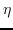
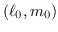

Next: Computation Up: Spectral Line Data Reduction Previous: Velocity Linetype
Spectral line observations will always be ``corrupted'' by some continuum emission. If this is stronger or comparable with the spectral line, then the final spectral images may be dominated by the continuum and its artifacts (sidelobes, deconvolution errors, calibration errors, etc). If the final dynamic range of your image is dominated by continuum errors, then weak spectral features will be completely obscured. It is possible to remove the continuum so that the final dynamic range of the spectral image is dependent on thermal noise and artifacts resulting from the spectral line (and not artifacts from the continuum). Consequently it is usually best to subtract the continuum from the data. A good description of the algorithms to do this is given by Cornwell, Uson and Haddad (1992). (A&A 258, 583). Neil Killeen's ``Analysis of Australia Telescope Compact Array Data'' also gives a good summary as well as describing the AIPS possibilities. The paper Sault (1994) (A&AS 107, 55) describes one of the algorithms in detail. Yet another summary is given below.
Although three approaches to continuum subtraction are possible in Miriad, we recommend only one of these - the UVLIN approach. The other two are briefly mentioned for completeness:
In this scheme, each visibility spectrum is fitted by a polynomial. Only the line-free channels of the spectrum are used to determine the fit The polynomial can be taken to represent the continuum emission, and so can be subtracted from the spectrum. Because bandwidths in spectral line experiments are often narrow, the continuum emission is usually well modelled by a fairly low order polynomial (zeroth, first or second order). The fit is performed to the real and imaginary parts of the data separately. In general, this is better than fitting to the amplitude and phase, as the whole process remains a linear one. A non-linear fit to amplitude and phase couples together the errors on all sources, and produces an amplitude bias at low signal-to-noise ratios.
The main advantage of UVLIN over the other two approaches is that it is generally the most robust to a large variety of systematic errors (such as antenna gain errors). IMLIN is also moderately robust to these errors, whereas UVSUB is not particularly robust at all. UVLIN, along with IMLIN, is substantially less expensive computationally than UVSUB, and they generally requires less care and intervention on the part of the user.
UVLIN, however, is not perfect. There will be some residual continuum left behind, and the noise level in the output will be amplified in those channels that were excluded from the fitting process. These drawbacks are not unique to UVLIN - they will be a characteristic of any continuum subtraction technique. There are three parameters to control UVLIN - the set of channels to be used in the fitting process (i.e. the set of channels that are assumed to be line-free), the order of the polynomial to fit and an offset to be applied to the data before the fit is performed. The combination of these three parameters will determine the residual continuum. They also determine the factor by which the noise level increases in the data. We clearly want to keep this noise amplification to an acceptable level.
Usually we have little direct control over the channels that are line-free. Obviously, though, the more line-free channels we have, the better the fitting process will be. Do not discard any line-free channels until after continuum subtraction.
If there are line-free channels on only one side of the spectrum (i.e. you have to extrapolate the continuum fit), then generally it is unwise to use anything but a 0th order fit. This is because the residual continuum is not greatly affected by the fit order, whereas noise amplification can become extreme.
On the other hand, if there are line-free channels on both sides of the
spectrum, and provided the fraction of channels involved in the fitting
process is appreciable (at least 25%), then higher order fits are quite
useful. The residual continuum depends on the continuum source flux
density and the parameter . For a source
at location  (with respect to the phase centre),
|
As the fit order is increased, noise amplification also increases. Generally, provided we have a significant number of line-free channels (and you are not extrapolating) the noise amplification is modest. You should be cautious of noise amplification for fourth order fits if fewer than 50% of the channels are line-free, or for third order fits when fewer than 25% of the channels are line-free. Miriad task contsen can be used to determine the noise amplification given the fitting order and the channels included in the fitting process.
The fact that the residual continuum is a function of the distance of the point source from the phase centre should not be a surprise. As u-v coordinate is proportional to frequency, the channels in a visibility spectrum are sampling slightly different locations in the u-v plane. For a point source (which we assume to have a spectral index of zero, for simplicity) will have a visibility function whose real and imaginary parts are sinusoids. The fraction of a period of this sinusoid contained within the u-v coordinates spanned by a visibility spectrum will be directly proportional to the distance of the point source from the phase centre. The further the point source is from the phase centre, the greater proportion of a sinusoid period is present in the visibility spectrum, and the poorer the approximation of the visibility spectrum by a low order polynomial.
This leads us to another way of reducing the residual continuum - we can shift the phase centre to the location of the continuum source. The amount of benefit derived from such a shift will depend strongly on the skewness of the distribution of the continuum, and its distance from the phase centre. The task conterr can suggest shifts which will minimise the error (see options=shift).